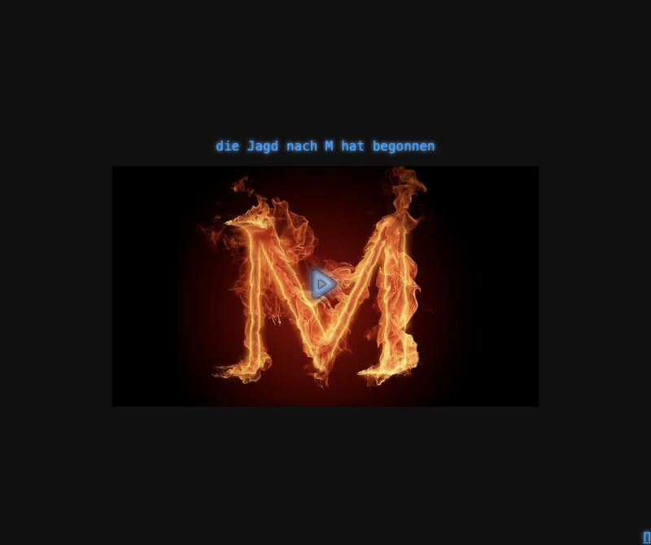

The Hunt for M
The Hunt for M ("die Jagd nach M") is an old riddle game of mine that I've brought back to life. You start on a moody teaser page with a burning M and no instructions, and from there it's up to you to follow the trail. It's an ARG-style puzzle hunt, so poking around, reading source and thinking sideways are all part of the game.
Its heart is FUCKUP, the "First Universal Cybernetic-Kinetic Ultra-Micro Programmer", a fake retro terminal in the browser. Once you get in, you can list directories, read files, decrypt data, unlock things and connect to a little fictional network of hosts. Those hosts hide images, videos and clues for the next step.
The original ran on an ancient PHP stack, with Flash in places. For this release I ported the backend to PHP 8, fixed some security holes, squashed the history to strip out old credentials and put it behind nginx. It's in German and a bit cryptic on purpose. Good luck!
Screenshots


Latest updates
- 2026-10-01 PHP 8 port, security fixes, nginx deploy to ruzzoli.de/fuckup